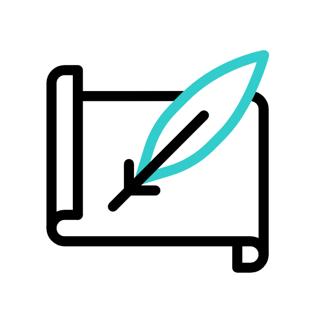
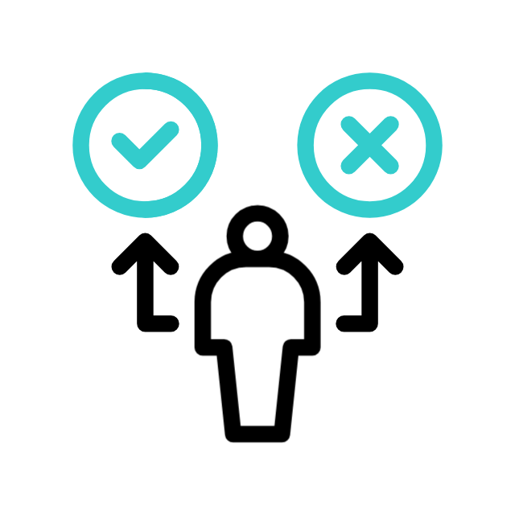

↗Diseño instruccional
Transformamos necesidades de negocio en rutas de aprendizaje claras, medibles y relevantes.
APRENDIZAJE DIGITAL · CHILE
Unimos diseño instruccional, producción audiovisual y tecnología para crear experiencias de capacitación que las personas quieren completar.
De la idea a la experiencia completa
LO QUE HACEMOS
Construimos soluciones completas y modulares, desde una cápsula puntual hasta un ecosistema de formación.

↗Transformamos necesidades de negocio en rutas de aprendizaje claras, medibles y relevantes.
Guiones, storytelling, recursos audiovisuales y contenidos e-learning listos para aprender.

↗Evaluaciones, actividades gamificadas y escenarios que convierten contenido en decisiones.
IMPACTO MEDIBLE
VOCES QUE VALIDAN
EXPERIENCIAS QUE CONECTAN
Este espacio está preparado para tu showreel o video corporativo.
Ver proyectos →HABLEMOS
Convirtámosla en una experiencia que genere resultados.